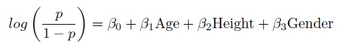

Dealing with Selection Bias in Observational Studies
This site is currently under construction.
Karen attended the Drop-In Biostatistics Worskshop seeking some advice on the analysis of her study. Karen collected a sample of 654 youths in the area of East Boston to explore the relationship between smoking and Forced Expiratory Volume (FEV). In this study, Karen measured the FEV (liters), smoking status (no = 0, yes = 1), age, height (inches), and gender (female = 0, male = 1) for each subject.
This study is necessarily observational as it would be unethical to randomize people to a smoking group and a nonsmoking group. When we lack the ability to randomize subjects to each treatment group we potentially introduce selection bias into the study. Selection bias occurs when certain kinds of subjects are differentially assigned to the treatments. For example, most smokers could be men, hence the effect of smoking on FEV would be confounded by gender. Therefore, it is important to take this possible confounding into account when analysing observational studies. Propensity analysis is one way to account for selection bias.
Propensity analysis uses the propensity score to control for confounding variables. "The propensity score is a measure of the likelihood that a person would have been treated using only their covariate scores" (D'Agostino). The propensity score is often calculated using logistic regression or discriminant analysis. In Karen's case the treatment has two levels, smoking and nonsmoking, hence we will perform a logistic regression with treatment as our response and the subject characteristics as our covariates. Since the goal of the propensity score is to obtain the best estimated probability of treatment assignment, we are not concerned with having a parsimonious model. That is, when modeling the treatment against the covariates we can use interaction terms, quadratic terms, etc., even if they aren't statistically significant.
To calculate the propensity scores for Karen's study we used the following model.

The propensity score is the probability of receiving a particular treatment given the covariates. Hence in the above model the propensity scores are the p's, i.e., the fitted values.
There are four standard approaches for using the propensity score to control for confounding.
- Matching
- Stratifying
- Regression Modeling
- Inverse Probability Weighting
-- ErinEsp - 28 Apr 2011